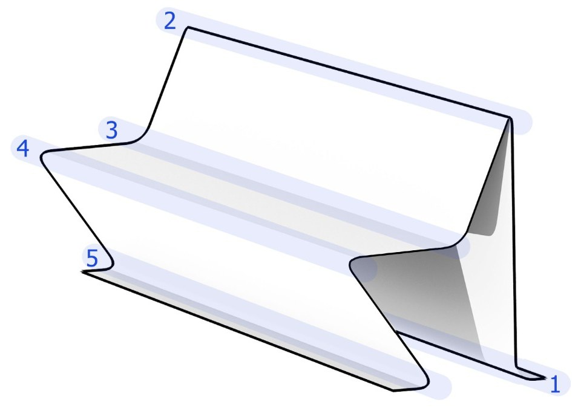
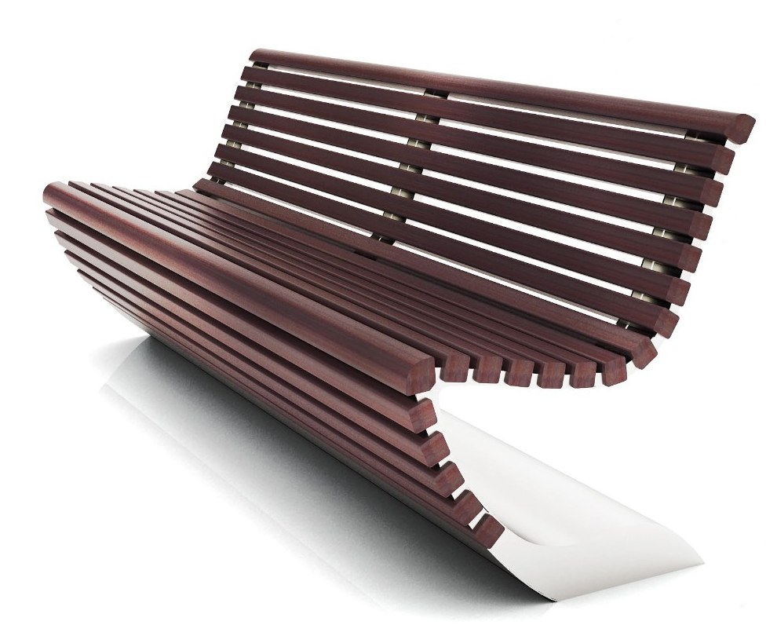
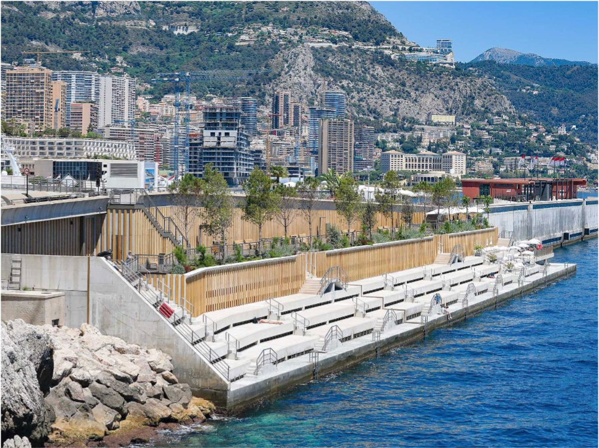
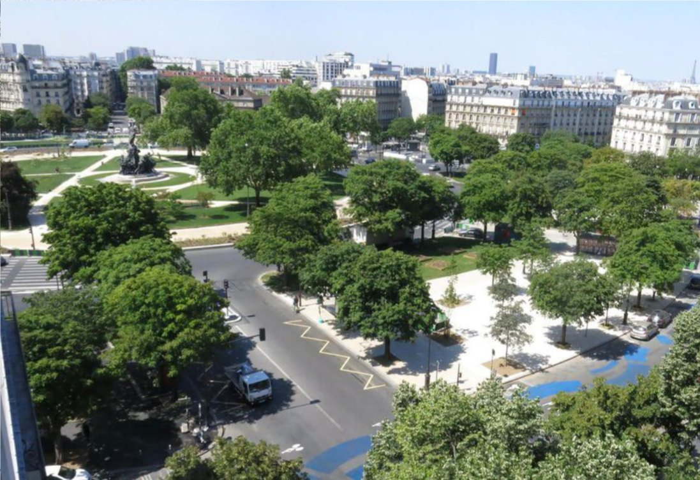
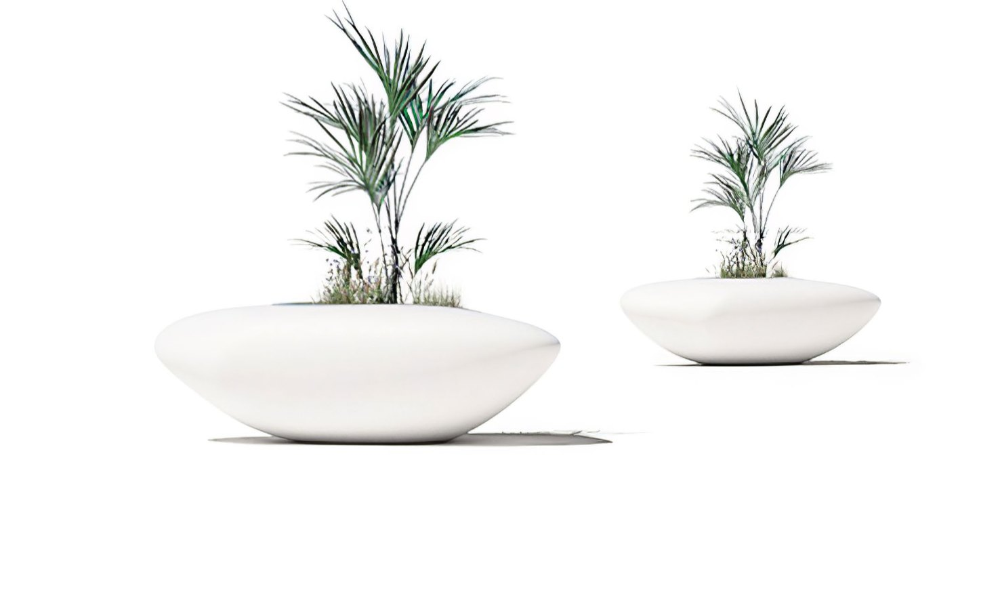
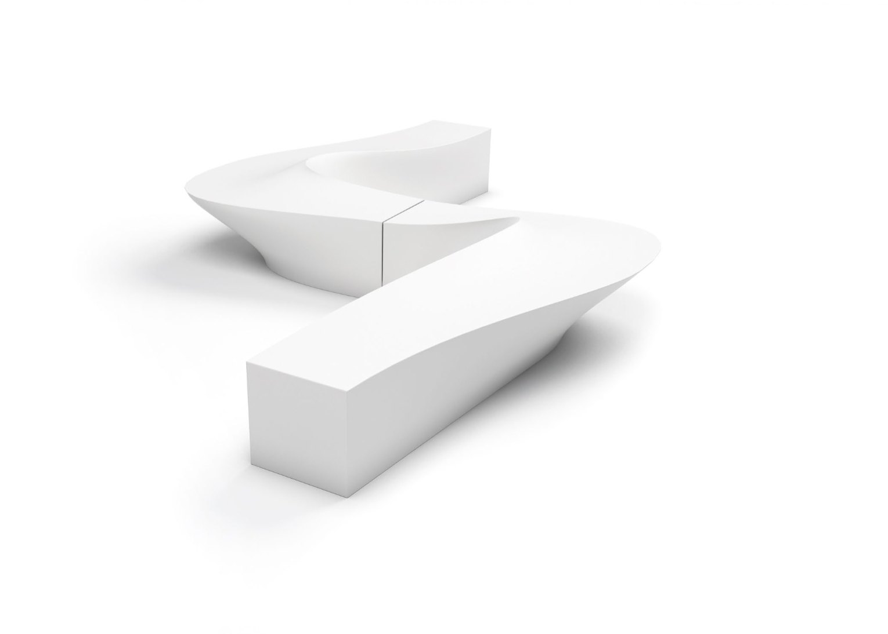

Chapelet.
2008–
2008
Mobilier urbain


02/28
Crossed
CROSSED
03/28
Crossed bench

Jardinière Barcelone

Siège Capri

Corbeille Crossed
04/28
La famille Crossed


Banc et corbeille Hilton Lac-Leamy
Jardinière entrée de l'hôtel
05/28
Hilton Lac-Leamy
06/28
Zadig


07/28
Zadig



08/28
Du croquis au banc

09/28
Alassio, Italie

10/28
Emme


11/28
Variations


12/28
Variations

13/28
Variations


14/28
Emme
15/28
Les moules

16/28
Emme

17/28
Banc béton et bois

18/28
Banc acier et béton


19/28
Ligne


20/28
Banc monolithe


21/28
Banc et jardinières


22/28
Monaco

23/28
KJ

24/28
KJ


25/28
KJ


26/28
Le moule


27/28
Fonderie
Chapelet.